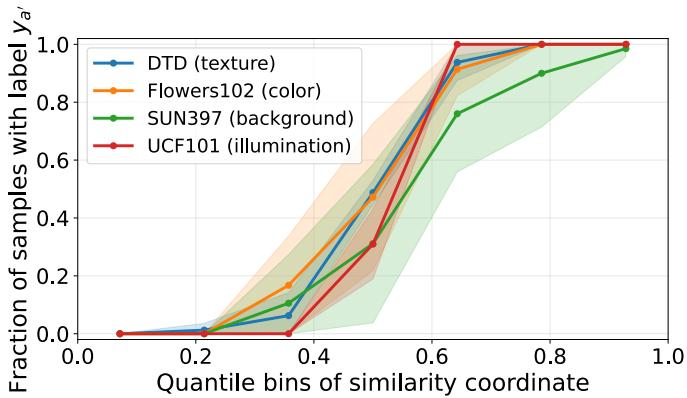

Semantic Robustness Certification for Vision-Language Models Peiyu Yang , Paul Montague , Feng Liu , Andrew C. Cullen , Amardeep Kaur , Christopher Leckie , Sarah M. Erfani；arXiv 元数据未稳定列机构时按作者列表记录。 arXiv 新增 + ICML accepted + VLM robustness 原文链接
Figureure 2 · Illustration of the semantic transformation in a threedimensional visuFigure 2. Illustration of the semantic transformation in a threedimensional visualization of the VLM embedding space.这张可视化用来解释 Semantic Robustness Certification for Vision-Language 学到的中间表征或对齐关系。重点看它是否支持正文里的机制判断。

Figureure 11 · Semantic strength via similarityFigure 11. Semantic strength via similarity. For each dataset, we sample 20 semantic pairs $( a , a ^ { \prime } )$ and randomly split images from the two classes into two disjoint subsets. We compute class mean visual embeddings $\bar { z } _ { a } , \bar { z } _ { a ^ { \prime } }$ on images from one subset and form the semantic direction by $v _ { a , a ^ { \prime } } = \bar { z } _ { a ^ { \prime } } - \bar { z } _ { a }$ . We then score images in the other subset by $t ( x _ { i } ) = \langle z _ { i } , v _ { a , a ^ { \prime } } \rangle$ with $z _ { i } = f _ { \mathrm { i m g } } ( x _ { i } )$ , sort by t(xi), and partition into equal-count quantile bins. The plot shows the fraction of samples with label $y _ { a ^ { \prime } }$ across bins. Solid lines are averages over pairs and shaded bands are 95% normal approximation confidence intervals across pairs.这张可视化用来解释 Semantic Robustness Certification for Vision-Language 学到的中间表征或对齐关系。重点看它是否支持正文里的机制判断。